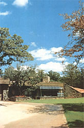

(LEFT) The insulation was visible before the front of the house was sheathed and the green house attached. (CENTER)You can see the top of the light well on the right . . . active solar collectors are visible on the left.